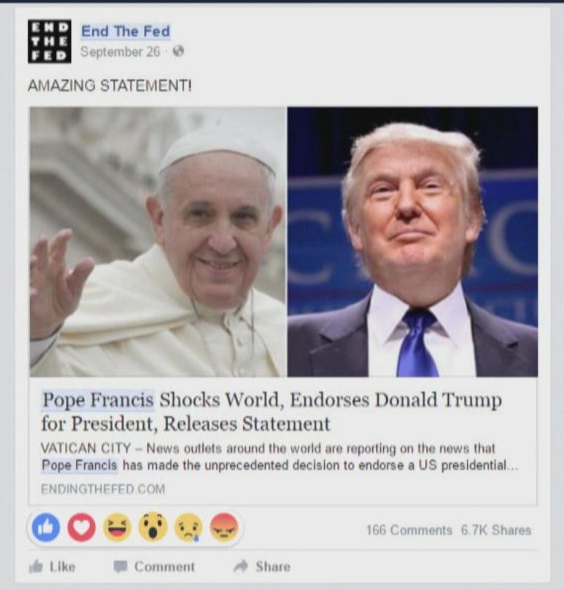

esempio
Papa Francesco fa marcia indietro su Trump
Papa Francesco fa marcia indietro su Trump. “Quest’uomo non è cristiano” ha dichiarato recentemente il pontefice riguardo Donald Trump, di nuovo in corsa per le presidenziali USA, un deciso cambio di opinione dato che nel 2016 aveva stupito il mondo intero appoggiandone la candidatura.
